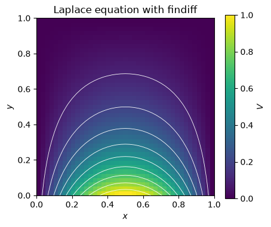
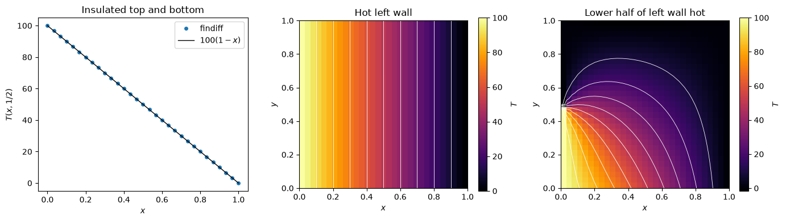
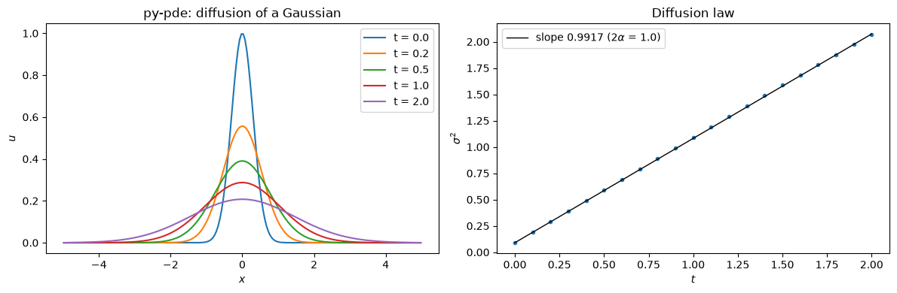
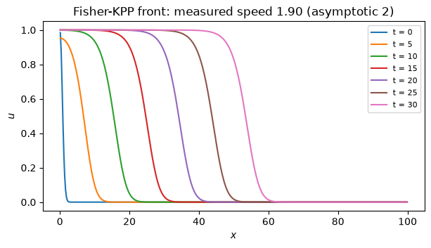
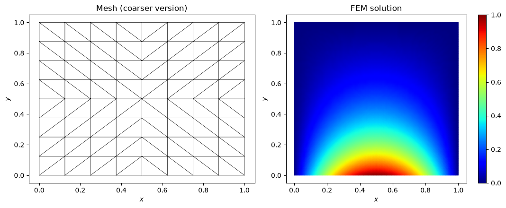
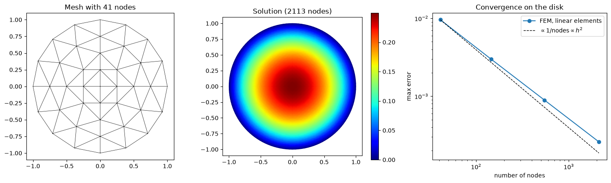
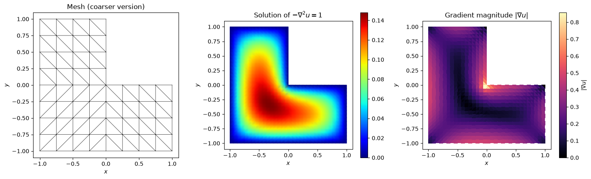

Numerical Libraries for PDEs#
REFS:
findiff (M. Baer), py-pde (D. Zwicker, JOSS 2020), scikit-fem (T. Gustafsson & G. McBain, JOSS 2020)
J. Dokken, The FEniCSx tutorial
Previous notebooks: Relaxation, Heat equation, Wave equation
Learning goals
After this notebook you should be able to
solve the model problems of this chapter with library calls, and check them against our own solvers and exact solutions;
recognize which numerical method a library is using, and why that matters (stability, accuracy);
explain the main ideas of the finite element method (mesh, basis functions, weak form) and when it is preferable to finite differences;
choose a library for a given problem, from small scripts to large parallel/GPU simulations.
findiff 0.16.1, py-pde 0.59.0, scikit-fem 12.0.2
Why use a library?#
In the previous notebooks we wrote every solver by hand: this is the best way to understand stability, accuracy and boundary conditions. For real problems, libraries give you
tested, optimized code (often compiled, parallel or GPU-ready);
many methods behind one interface (explicit, implicit, adaptive time stepping);
complex geometries and the finite element method (FEM);
less code, so fewer bugs, if you know what the library is doing.
The last point is the theme of this notebook: we solve the same problems as before and compare with our own results and with exact solutions.
Library |
Method |
Strengths |
Install |
|---|---|---|---|
finite differences |
any derivative and accuracy order; stationary PDEs with a few lines |
|
|
finite differences + time steppers |
time-dependent PDEs written as formulas; many solvers; numba-compiled |
|
|
finite elements |
pure Python, light, flexible weak forms |
|
|
finite differences, code generation |
generates optimized C/OpenMP/GPU code (seismic imaging) |
separate environment |
|
finite elements |
large 3D problems, MPI parallel, GPUs |
conda/pixi, docker |
findiff: finite differences made easy#
Derivatives of any order and accuracy#
findiff computes finite-difference coefficients for any derivative and accuracy order (the Taylor-series construction of the relaxation notebook, automated). findiff.Diff(axis, h) is a derivative operator that can be applied to arrays, raised to powers and added.
for acc in [2, 4, 6]:
c = findiff.coefficients(deriv=2, acc=acc)["center"]
print(f"u'' with accuracy O(h^{acc}): offsets {c['offsets']}, coefficients {np.round(c['coefficients'], 4)}")
x = np.linspace(0, 2*np.pi, 101)
h = x[1] - x[0]
f = np.sin(x)
for acc in [2, 4]:
d2 = findiff.Diff(0, h, acc=acc)**2 # second derivative operator
print(f"acc={acc}: max error of (sin)'' = {np.max(np.abs(d2(f) + np.sin(x))):.2e}")
u'' with accuracy O(h^2): offsets [-1 0 1], coefficients [ 1. -2. 1.]
u'' with accuracy O(h^4): offsets [-2 -1 0 1 2], coefficients [-0.0833 1.3333 -2.5 1.3333 -0.0833]
u'' with accuracy O(h^6): offsets [-3 -2 -1 0 1 2 3], coefficients [ 0.0111 -0.15 1.5 -2.7222 1.5 -0.15 0.0111]
acc=2: max error of (sin)'' = 3.29e-04
acc=4: max error of (sin)'' = 2.28e-06
The first line is our familiar \((1, -2, 1)/h^2\) stencil; higher accuracy uses wider stencils. Near the boundaries findiff automatically switches to one-sided formulas of the same order.
The Laplace model problem#
The model problem of the relaxation notebook (\(V(x, 0) = \sin\pi x\), zero on the other walls) in a few lines. PDE(operator, rhs, bc).solve() builds the sparse matrix (as we did with sp.kron for the implicit 2D heat solver) and solves it directly.
Warning
findiff gotcha
The value assigned to a boundary must be a scalar or a full-size array (shape (N, N)); findiff picks the boundary points from it.
N = 41
x = np.linspace(0, 1, N)
h = x[1] - x[0]
XX, YY = np.meshgrid(x, x, indexing="ij") # same convention as before: V[i, j] = V(x_i, y_j)
laplacian = findiff.Diff(0, h)**2 + findiff.Diff(1, h)**2
bc = findiff.BoundaryConditions((N, N))
bc[:, 0] = np.sin(np.pi*XX) # y = 0 (full-size array!)
bc[:, -1] = 0.0 # y = 1
bc[0, :] = 0.0 # x = 0
bc[-1, :] = 0.0 # x = 1
V = findiff.PDE(laplacian, np.zeros((N, N)), bc).solve()
exact = np.sin(np.pi*XX)*np.sinh(np.pi*(1 - YY))/np.sinh(np.pi)
print(f"max error vs exact: {np.max(np.abs(V - exact)):.2e} (our converged relaxation gave 1.78e-04 for N = 41)")
fig, ax = plt.subplots(figsize=(4.8, 4))
im = ax.imshow(V.T, origin="lower", extent=(0, 1, 0, 1))
ax.contour(x, x, V.T, levels=np.linspace(0.1, 0.9, 9), colors="w", linewidths=0.6)
plt.colorbar(im, ax=ax, label="$V$")
ax.set(xlabel="$x$", ylabel="$y$", title="Laplace equation with findiff")
plt.show()
max error vs exact: 1.78e-04 (our converged relaxation gave 1.78e-04 for N = 41)

The error is the same as with our own sparse solver: both use the same five-point stencil and solve the linear system exactly. Neumann conditions are just as short: assign a tuple (operator, value), for example bc[1:-1, 0] = findiff.Diff(1, h), 0 for \(\partial V/\partial y = 0\) at \(y = 0\).
Exercise 57 (Insulated plate with findiff)
Repeat the steady-heat exercise of the relaxation notebook with findiff (\(N = 31\)): \(T = 100\) on the left wall, \(T = 0\) on the right wall, and insulated bottom and top walls.
Complete
plate(hot_left)with the two Neumann conditions \(\partial T/\partial y = 0\) at the bottom and top walls. Apply them only to the points1:-1, so the corners keep their Dirichlet values.Run the next cell. It compares \(T(x, 1/2)\) with \(100(1 - x)\) and also heats only the lower half of the left wall. Compare with the relaxation result: how many lines of code did each approach need?
def plate(hot_left, N=31):
"""Steady temperature: left wall at hot_left (scalar or (N, N) array), right wall 0, insulated bottom and top."""
h = 1.0/(N - 1)
laplacian = findiff.Diff(0, h)**2 + findiff.Diff(1, h)**2
bc = findiff.BoundaryConditions((N, N))
bc[0, :] = hot_left # left wall
bc[-1, :] = 0.0 # right wall
# YOUR CODE HERE
pass
return findiff.PDE(laplacian, np.zeros((N, N)), bc).solve()
# Given: run it after completing plate
N = 31
x = np.linspace(0, 1, N)
XX, YY = np.meshgrid(x, x, indexing="ij")
T1 = plate(100.0)
T2 = plate(np.where(YY < 0.5, 100.0, 0.0))
print("max deviation from 100(1-x):", np.max(np.abs(T1 - 100*(1 - XX))))
fig, axes = plt.subplots(1, 3, figsize=(14, 4))
axes[0].plot(x, T1[:, N//2], "o", ms=4, label="findiff")
axes[0].plot(x, 100*(1 - x), "k-", lw=1, label="$100(1-x)$")
axes[0].set(xlabel="$x$", ylabel="$T(x, 1/2)$", title="Insulated top and bottom")
axes[0].legend()
for ax, T, title in [(axes[1], T1, "Hot left wall"), (axes[2], T2, "Lower half of left wall hot")]:
im = ax.imshow(T.T, origin="lower", extent=(0, 1, 0, 1), cmap="inferno")
ax.contour(x, x, T.T, levels=np.linspace(10, 90, 9), colors="w", linewidths=0.6)
plt.colorbar(im, ax=ax, label="$T$")
ax.set(xlabel="$x$", ylabel="$y$", title=title)
plt.tight_layout()
save_example("libs_findiff_plate")
plt.show()
max deviation from 100(1-x): 2.325961645510688e-10

py-pde: time-dependent PDEs#
py-pde solves equations of the form \(\partial_t u = \mathcal{D}[u]\), where the right-hand side is evaluated with finite differences. This is the method of lines: discretize space, and integrate the resulting large system of ODEs with an ODE solver, as in the IVP lecture. You choose the solver: "euler" (FTCS-like), "runge-kutta", "implicit", "crank-nicolson", or "scipy" (adaptive solve_ivp).
Note
Cell-centred grids py-pde stores values at the centres of the grid cells, not at the boundaries. A grid with 40 cells on \([0, 1]\) has points \(x = 0.0125, 0.0375, \dots\), and boundary conditions are imposed on the cell faces.
The diffusion law again#
We reproduce the Gaussian-spreading exercise of the heat notebook: \(\sigma^2 = \sigma_0^2 + 2\alpha t\). A tracker stores the field every 0.1 time units.
alpha = 0.5
grid = pde.CartesianGrid([[-5, 5]], 200) # 200 cells on [-5, 5]
state = pde.ScalarField.from_expression(grid, "exp(-x**2/(2*0.3**2))")
eq = pde.DiffusionPDE(diffusivity=alpha, bc={"value": 0})
storage = pde.MemoryStorage()
eq.solve(state, t_range=2.0, dt=2e-3, solver="euler", tracker=[storage.tracker(0.1)])
xs = grid.axes_coords[0]
times = np.array(storage.times)
var = np.array([np.sum(xs**2*f.data)/np.sum(f.data) for f in storage])
slope = np.polyfit(times, var, 1)[0]
fig, (ax1, ax2) = plt.subplots(1, 2, figsize=(12, 4))
for k in [0, 2, 5, 10, 20]:
ax1.plot(xs, storage[k].data, label=f"t = {times[k]:.1f}")
ax1.set(xlabel="$x$", ylabel="$u$", title="py-pde: diffusion of a Gaussian")
ax1.legend()
ax2.plot(times, var, "o", ms=3)
ax2.plot(times, var[0] + slope*times, "k-", lw=1, label=f"slope {slope:.4f} (2$\\alpha$ = {2*alpha})")
ax2.set(xlabel="$t$", ylabel=r"$\sigma^2$", title="Diffusion law")
ax2.legend()
plt.tight_layout()
plt.show()

Your own equation in one line#
Any PDE can be written as a formula. For example the Fisher–KPP equation \(u_t = D u_{xx} + r u(1 - u)\) (a population that diffuses and grows) produces a front that travels at speed \(2\sqrt{rD}\). (The measured speed approaches this value slowly, because the front speed has a known correction \(\approx -3/(2t)\) at finite times.)
grid = pde.CartesianGrid([[0, 100]], 400)
state = pde.ScalarField.from_expression(grid, "exp(-x**2)") # small population at the left
fisher = pde.PDE({"u": "laplace(u) + u*(1 - u)"}, bc={"derivative": 0}) # D = r = 1
storage = pde.MemoryStorage()
fisher.solve(state, t_range=30, dt=0.01, solver="euler", tracker=[storage.tracker(5)])
xs = grid.axes_coords[0]
fig, ax = plt.subplots(figsize=(7, 3.5))
for t, f in storage.items():
ax.plot(xs, f.data, label=f"t = {t:.0f}")
front = [xs[np.argmin(np.abs(f.data - 0.5))] for f in storage]
speed = np.polyfit(storage.times[2:], front[2:], 1)[0]
ax.set(xlabel="$x$", ylabel="$u$", title=f"Fisher-KPP front: measured speed {speed:.2f} (asymptotic 2)")
ax.legend(fontsize=8)
plt.show()

The method matters: waves with py-pde#
The wave equation is written as two first-order equations, \(u_t = v\) and \(v_t = c^2 u_{xx}\). Each Fourier mode is then an oscillator with purely imaginary eigenvalues, and the forward Euler method is unstable for every time step for such systems (remember the harmonic oscillator in the ODE lectures). The library does exactly what we ask, so a bad choice of method blows up:
grid = pde.CartesianGrid([[0, 1]], 200)
u0 = pde.ScalarField.from_expression(grid, "exp(-(x-0.5)**2/(2*0.05**2))")
wave = pde.WavePDE(speed=1.0, bc={"value": 0})
for solver in ["euler", "scipy"]:
storage = pde.MemoryStorage()
wave.solve(wave.get_initial_condition(u0), t_range=2.0, dt=1e-3, solver=solver,
tracker=[storage.tracker(0.5)])
print(f"{solver:6s}: max |u| at t = 0, 0.5, 1, 1.5, 2:",
["%.2e" % np.abs(f[0].data).max() for f in storage])
euler : max |u| at t = 0, 0.5, 1, 1.5, 2: ['9.99e-01', '4.16e-01', '3.38e+15', '5.19e+31', '3.14e+47']
scipy : max |u| at t = 0, 0.5, 1, 1.5, 2: ['9.99e-01', '5.54e-03', '9.98e-01', '1.70e-02', '9.97e-01']
With the adaptive scipy solver (Runge–Kutta 4/5), the pulse splits, reflects and recovers its initial shape at \(t = 2\), as in our leap-frog solution. Forward Euler grows exponentially.
Exercise 58 (py-pde versus d’Alembert)
Complete
dalembert(x, t), d’Alembert’s solution \(\frac12\left[f(x - t) + f(x + t)\right]\) for the Gaussian at rest (one line;fis given).Run the next cell. It solves the wave problem up to \(t = 0.25\) (before the pulses reach the walls) with
solver="scipy"and withsolver="runge-kutta"(dt=1e-3) on 200 cells, and withscipyon 400 cells, and prints the maximum errors. Why are the errors of the two solvers almost the same? Which error dominates, the time-stepping one or the spatial one?
def dalembert(x, t):
"""Exact solution for the Gaussian f released at rest (c = 1, before reaching the walls)."""
f = lambda s: np.exp(-(s - 0.5)**2/(2*0.05**2))
# YOUR CODE HERE
pass
# Given: run it after completing dalembert
wave = pde.WavePDE(speed=1.0, bc={"value": 0})
fig, ax = plt.subplots(figsize=(7, 4))
for ncells, solver, kw in [(200, "scipy", {}), (200, "runge-kutta", {"dt": 1e-3}), (400, "scipy", {})]:
grid = pde.CartesianGrid([[0, 1]], ncells)
xs = grid.axes_coords[0]
u0 = pde.ScalarField(grid, dalembert(xs, 0.0))
u = wave.solve(wave.get_initial_condition(u0), t_range=0.25, solver=solver, **kw)[0].data
print(f"{solver:12s}, {ncells} cells: max error = {np.max(np.abs(u - dalembert(xs, 0.25))):.2e}")
if ncells == 200:
ax.plot(xs, u, "--", label=solver)
ax.plot(xs, dalembert(xs, 0.25), "k-", lw=3, alpha=0.3, label="d'Alembert")
ax.set(xlabel="$x$", ylabel="$u$", title="Wave equation at t = 0.25")
ax.legend()
save_example("libs_pypde_wave")
plt.show()
---------------------------------------------------------------------------
TypeError Traceback (most recent call last)
Cell In[12], line 9
5 grid = pde.CartesianGrid([[0, 1]], ncells)
6 xs = grid.axes_coords[0]
7 u0 = pde.ScalarField(grid, dalembert(xs, 0.0))
8 u = wave.solve(wave.get_initial_condition(u0), t_range=0.25, solver=solver, **kw)[0].data
----> 9 print(f"{solver:12s}, {ncells} cells: max error = {np.max(np.abs(u - dalembert(xs, 0.25))):.2e}")
10 if ncells == 200:
11 ax.plot(xs, u, "--", label=solver)
12 ax.plot(xs, dalembert(xs, 0.25), "k-", lw=3, alpha=0.3, label="d'Alembert")
TypeError: unsupported operand type(s) for -: 'float' and 'NoneType'

The finite element method in a nutshell#
Finite differences need a structured grid. Real objects (a heart, a turbine blade, a microchip) have curved and irregular shapes. The finite element method (FEM) handles them with three ideas:
Mesh. Divide the domain into simple elements (triangles in 2D, tetrahedra in 3D) that follow the boundary, and refine them only where needed.
Basis functions. Approximate the solution as \(u(\mathbf x) \approx \sum_j U_j\,\phi_j(\mathbf x)\), where each \(\phi_j\) is a “hat” function: 1 at node \(j\), 0 at all other nodes, linear on each triangle.
Weak form. Instead of requiring \(-\nabla^2 u = f\) at every point, multiply by a test function \(v\) and integrate by parts:
Taking \(v = \phi_i\) for every node gives a sparse linear system \(A\,U = b\) with \(A_{ij} = \int \nabla\phi_i\cdot\nabla\phi_j\), the “stiffness matrix”. On a regular grid of right triangles, \(A\) reduces to our five-point stencil. Neumann conditions enter naturally through the boundary term of the integration by parts.
scikit-fem#
scikit-fem is a pure-Python FEM library: you write the weak form almost literally, and it assembles the sparse matrices (in SciPy formats) for you.
The model problem, once more#
Linear elements on a triangular mesh of the unit square with \(65\times65\) nodes:
from skfem import MeshTri, Basis, ElementTriP1, BilinearForm, LinearForm, condense, solve
from skfem.helpers import dot, grad
@BilinearForm
def laplace(u, v, _):
return dot(grad(u), grad(v)) # weak form of -laplacian(u)
@LinearForm
def unit_load(v, _):
return 1.0*v # right-hand side f = 1
mesh = MeshTri.init_sqsymmetric().refined(5)
basis = Basis(mesh, ElementTriP1())
A = laplace.assemble(basis) # sparse stiffness matrix (scipy CSR)
xn, yn = mesh.p # node coordinates
D = mesh.boundary_nodes() # Dirichlet nodes
u = np.zeros(mesh.p.shape[1])
bottom = D[np.isclose(yn[D], 0.0)]
u[bottom] = np.sin(np.pi*xn[bottom]) # V(x, 0) = sin(pi x), 0 elsewhere
u = solve(*condense(A, np.zeros_like(u), x=u, D=D))
exact = np.sin(np.pi*xn)*np.sinh(np.pi*(1 - yn))/np.sinh(np.pi)
print(f"{mesh.p.shape[1]} nodes, {mesh.t.shape[1]} triangles, {A.format} matrix with {A.nnz} non-zeros")
print(f"max error vs exact: {np.max(np.abs(u - exact)):.2e}")
fig, (ax1, ax2) = plt.subplots(1, 2, figsize=(11, 4.5))
draw_mesh(MeshTri.init_sqsymmetric().refined(2), ax=ax1)
ax1.set_title("Mesh (coarser version)")
plot_fem(mesh, u, ax=ax2, shading="gouraud", colorbar=True)
ax2.set_title("FEM solution")
for ax in (ax1, ax2):
ax.set(xlabel="$x$", ylabel="$y$")
plt.tight_layout()
plt.show()
4225 nodes, 8192 triangles, csr matrix with 20865 non-zeros
max error vs exact: 6.96e-05

A curved domain: Poisson on a disk#
Now a problem that is awkward for finite differences on a square grid: \(-\nabla^2 u = 1\) on the unit disk with \(u = 0\) on the circle. The exact solution is \(u = (1 - r^2)/4\). The FEM error decreases as the mesh is refined (each refinement splits every triangle into four).
fig, axes = plt.subplots(1, 3, figsize=(15, 4.5))
nodes, errors = [], []
for nref in [2, 3, 4, 5]:
mesh = MeshTri.init_circle(nref)
basis = Basis(mesh, ElementTriP1())
A = laplace.assemble(basis)
b = unit_load.assemble(basis)
u = solve(*condense(A, b, D=mesh.boundary_nodes()))
r2 = mesh.p[0]**2 + mesh.p[1]**2
nodes.append(mesh.p.shape[1])
errors.append(np.max(np.abs(u - (1 - r2)/4)))
if nref == 2:
draw_mesh(mesh, ax=axes[0])
axes[0].set_title(f"Mesh with {nodes[-1]} nodes")
plot_fem(mesh, u, ax=axes[1], shading="gouraud", colorbar=True)
axes[1].set_title(f"Solution ({nodes[-1]} nodes)")
for ax in axes[:2]:
ax.set_aspect("equal")
nodes = np.array(nodes)
axes[2].loglog(nodes, errors, "o-", label="FEM, linear elements")
axes[2].loglog(nodes, errors[0]*nodes[0]/nodes, "k--", lw=1, label=r"$\propto 1/\mathrm{nodes} \propto h^2$")
axes[2].set(xlabel="number of nodes", ylabel="max error", title="Convergence on the disk")
axes[2].legend()
plt.tight_layout()
plt.show()

Exercise 59 (Finite differences or finite elements?)
To solve the disk problem with our relaxation code on a square grid, what would you have to do at the boundary, and what accuracy would you expect there?
Give two situations where you would still prefer finite differences.
Exercise 60 (An L-shaped membrane)
The next cell solves \(-\nabla^2 u = 1\) with \(u = 0\) on the boundary of the L-shaped domain MeshTri.init_lshaped() (the square \([-1, 1]^2\) without the quadrant \(x, y > 0\)), using the same laplace and unit_load forms. It also computes the gradient magnitude on each triangle with basis.interpolate(u).grad. Where is the gradient (the “stress”, or the electric field in electrostatics) largest? Why is the re-entrant corner at the origin special?
mesh = MeshTri.init_lshaped().refined(4)
basis = Basis(mesh, ElementTriP1())
A = laplace.assemble(basis)
b = unit_load.assemble(basis)
u = solve(*condense(A, b, D=mesh.boundary_nodes()))
grad_u = basis.interpolate(u).grad # gradient at the quadrature points of each triangle
gmag = np.sqrt(grad_u[0]**2 + grad_u[1]**2).max(axis=1)
fig, axes = plt.subplots(1, 3, figsize=(15, 4.5))
draw_mesh(MeshTri.init_lshaped().refined(2), ax=axes[0])
axes[0].set_title("Mesh (coarser version)")
plot_fem(mesh, u, ax=axes[1], shading="gouraud", colorbar=True)
axes[1].set_title("Solution of $-\\nabla^2 u = 1$")
tp = axes[2].tripcolor(mesh.p[0], mesh.p[1], mesh.t.T, facecolors=gmag, cmap="magma")
plt.colorbar(tp, ax=axes[2], label=r"$|\nabla u|$")
axes[2].set_title(r"Gradient magnitude $|\nabla u|$")
for ax in axes:
ax.set_aspect("equal")
ax.set(xlabel="$x$", ylabel="$y$")
plt.tight_layout()
save_example("libs_lshape")
plt.show()

Large-scale libraries#
These libraries are used for research and industrial simulations. They are heavier to install, so the code below is not executed when building the notes.
Devito#
Devito lets you write the stencil equations symbolically and generates optimized C code (OpenMP, MPI, GPUs) for them. It is used in seismic imaging, where the wave equation is solved billions of times. Install it in a separate environment: pip install devito. See the Devito tutorials.
MFEM#
MFEM is a C++ FEM library from Lawrence Livermore National Laboratory with a Python wrapper (PyMFEM); it scales to supercomputers and GPUs. Installation (pip install mfem, Linux only) compiles the library and takes a long time; the Colab examples are the easiest way to try it. More: MFEM examples, state of MFEM 2025.
# Poisson equation -laplacian(u) = 1 on the unit square with MFEM (not executed here)
import mfem.ser as mfem
mesh = mfem.Mesh.MakeCartesian2D(10, 10, mfem.Element.QUADRILATERAL, True, 1.0, 1.0)
fec = mfem.H1_FECollection(1, mesh.Dimension()) # linear (H1) elements
fes = mfem.FiniteElementSpace(mesh, fec)
print("Number of unknowns:", fes.GetTrueVSize())
ess_bdr = mfem.intArray(mesh.bdr_attributes.Max()) # all boundaries are Dirichlet
ess_bdr.Assign(1)
ess_tdof_list = mfem.intArray()
fes.GetEssentialTrueDofs(ess_bdr, ess_tdof_list)
b = mfem.LinearForm(fes) # right-hand side
b.AddDomainIntegrator(mfem.DomainLFIntegrator(mfem.ConstantCoefficient(1.0)))
b.Assemble()
a = mfem.BilinearForm(fes) # stiffness matrix
a.AddDomainIntegrator(mfem.DiffusionIntegrator())
a.Assemble()
x = mfem.GridFunction(fes)
x.Assign(0.0)
A, B, X = mfem.OperatorPtr(), mfem.Vector(), mfem.Vector()
a.FormLinearSystem(ess_tdof_list, x, b, A, X, B)
mfem.PCG(A, mfem.GSSmoother(A.AsSparseMatrix()), B, X, 1, 200, 1e-12, 0.0) # conjugate gradients
a.RecoverFEMSolution(X, b, x)
mesh.Print("mesh.mesh", 8)
x.Save("solution.gf", 8)
FEniCSx#
FEniCSx is the most popular open-source FEM framework: you write the weak form in the UFL language, very close to the mathematics, and it generates and compiles the code, with MPI parallelism. Good starting points are the FEniCSx tutorial and the dolfinx demos.

Fig. 15 Diffusion of a Gaussian computed with FEniCSx (from the FEniCSx tutorial).#
Installation with pixi. FEniCSx is installed from conda-forge. Docker (docker run -ti dolfinx/dolfinx:stable) works, but pixi is simpler: it creates a conda-forge environment per project.
Install pixi:
curl -fsSL https://pixi.sh/install.sh | sh(it goes to~/.local/bin; reopen the shell).Create a project with conda-forge as the channel and enter it:
pixi init fenicsx-env -c conda-forge -c nodefaults, thencd fenicsx-env.Add the packages:
pixi add fenics-dolfinx mpich pyvista.Run your scripts:
pixi run python fenics_example_01.py(or in parallel:pixi run mpirun -n 4 python fenics_example_01.py).
The script below (saved as fenics_example_01.py in this folder) solves \(-\nabla^2 u = -6\) on the unit square with \(u = 0\) on the boundary and saves a picture with PyVista. The folder also contains fenics_example_02.py, the official dolfinx Poisson demo with mixed Dirichlet/Neumann conditions.
%%writefile fenics_example_01.py
from mpi4py import MPI
from dolfinx import mesh, fem, plot
from dolfinx.fem.petsc import LinearProblem
import ufl
import numpy as np
domain = mesh.create_unit_square(MPI.COMM_WORLD, 32, 32)
V = fem.functionspace(domain, ("Lagrange", 1)) # linear elements
print(f"Mesh: {domain.topology.index_map(domain.topology.dim).size_local} cells, "
f"{V.dofmap.index_map.size_local} DOFs")
# u = 0 on the whole boundary
facets = mesh.locate_entities_boundary(domain, domain.topology.dim - 1,
lambda x: np.full(x.shape[1], True))
dofs = fem.locate_dofs_topological(V, domain.topology.dim - 1, facets)
bc = fem.dirichletbc(0.0, dofs, V)
# Weak form: integral(grad u . grad v) = integral(f v)
u, v = ufl.TrialFunction(V), ufl.TestFunction(V)
f = fem.Constant(domain, -6.0)
a = ufl.dot(ufl.grad(u), ufl.grad(v))*ufl.dx
L = f*v*ufl.dx
uh = LinearProblem(a, L, bcs=[bc], petsc_options_prefix="poisson_").solve()
print(f"min {uh.x.array.min():.6f}, max {uh.x.array.max():.6f}")
# Picture with pyvista
import pyvista
pyvista.OFF_SCREEN = True
topology, cell_types, geometry = plot.vtk_mesh(V)
grid = pyvista.UnstructuredGrid(topology, cell_types, geometry)
grid.point_data["u"] = uh.x.array
plotter = pyvista.Plotter()
plotter.add_mesh(grid, show_edges=True, cmap="viridis")
plotter.view_xy()
plotter.screenshot("solution.png")
print("Saved plot to solution.png")
Summary#
Need |
Suggested tool |
|---|---|
Understand the method, small grids, teaching |
your own NumPy code (previous notebooks) |
Stationary PDE on a rectangle, high-order stencils |
findiff |
Time-dependent PDE written as a formula, quick exploration |
py-pde (choose the solver consciously!) |
Irregular geometry, moderate size, pure Python |
scikit-fem |
Large 3D problems, parallel/GPU, research codes |
FEniCSx, MFEM, Devito |
Key ideas:
A library does not remove the need to understand the method: forward Euler on the wave equation explodes in any library.
Always validate: we reproduced the same errors as our own solvers on the same problems.
FEM = mesh + basis functions + weak form, leading to a sparse system like the one of finite differences; it shines on curved and irregular domains and with local refinement.
Further exercises and resources#
Fourth-order Laplace. Use
findiff.Diff(0, h, acc=4)in the Laplace model problem and measure the order of accuracy with \(N = 11, 21, 41, 81\).Gray–Scott patterns. Use py-pde to simulate the Gray–Scott reaction–diffusion system in 2D (compare with the VisualPDE preset).
FEM heat equation. Combine scikit-fem’s stiffness and mass matrices with the θ-method of the heat notebook to solve the heat equation on a disk.
More libraries: GetFEM, pyGIMLi (geophysics), COMET-FEniCSx (solid mechanics), gmsh (mesh generation), PyVista (3D visualization).